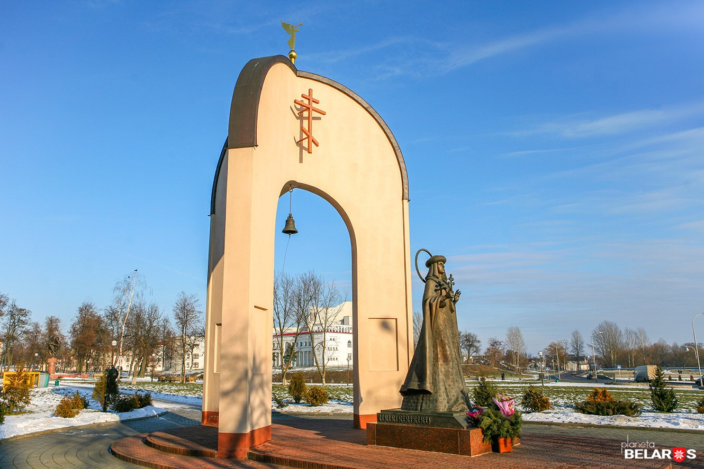

Национальный художественный музей Республики Беларусь (белор. Нацыянальны мастацкі музей Рэспублікі Беларусь) — крупнейший музей художественного профиля в Белоруссии (Государственная картинная галерея с 1939 по 1957 год, Государственный художественный музей с 1957 по 1993 год). Фонды музея насчитывают более 27 000 произведений. Расположен в столице республики — городе Минске.